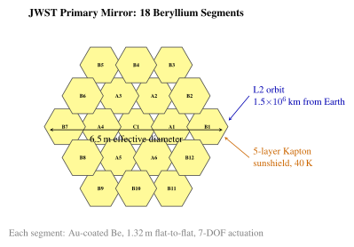

Chapter 20: Scientific Satellites and Space Observatories¶
20.1 Introduction to Space Science¶
Scientific satellites represent humanity’s most powerful tools for understanding the universe, Earth, and the space environment. By escaping the limitations imposed by the terrestrial atmosphere, space observatories access electromagnetic radiation across the entire spectrum—from radio waves through gamma rays—without attenuation or distortion. This capability has transformed astronomy, Earth science, heliophysics, and planetary science over the past six decades.
Scientific satellites fall into four primary categories: (1) astronomy and astrophysics observatories studying celestial objects and phenomena; (2) Earth science satellites monitoring our planet’s climate and surface systems; (3) space physics and heliophysics missions examining the Sun–Earth connection; and (4) planetary science spacecraft exploring other bodies in the Solar System.
The advantages of space-based observation are manifold. The atmosphere absorbs or distorts radiation across most of the electromagnetic spectrum, transmitting only visible light, near-infrared, and radio wavelengths through narrow “windows.” X-rays, ultraviolet, far-infrared, and gamma rays are entirely blocked at ground level. Even in transparent windows, atmospheric turbulence limits angular resolution to approximately 1 arcsecond for ground-based optical telescopes, compared with diffraction-limited performance achievable in space.
Microgravity enables instrument configurations impossible on the ground: deployable structures of arbitrary size, cryogenic cooling systems unencumbered by convection, and long-duration experiments requiring vibration isolation. The 24-hour observation window eliminates the day–night cycle, while orbital mechanics enables vantage points including the Sun–Earth Lagrange points, polar orbits for global Earth coverage, and interplanetary trajectories to every body in the Solar System.
Table 20.1 summarizes the major space observatories discussed in this chapter, spanning the full electromagnetic spectrum.
| Observatory | Agency | Year | Waveband | Aperture | Orbit | Status |
|---|---|---|---|---|---|---|
| HST | NASA/ESA | 1990 | UV/Opt/NIR | 2.4 m | LEO 593 km | Active |
| Chandra | NASA | 1999 | 0.1–10 keV | 1.2 m eff. | HEO | Active |
| XMM-Newton | ESA | 1999 | 0.2–15 keV | \(3\times0.7\) m | HEO | Active |
| Fermi | NASA | 2008 | 8 MeV–300 GeV | LAT | LEO 565 km | Active |
| Kepler | NASA | 2009 | Optical phot. | 0.95 m | Helio | Ret. 2018 |
| Planck | ESA | 2009 | CMB 30–857 GHz | 1.5 m | L2 | Ret. 2013 |
| NuSTAR | NASA | 2012 | 3–79 keV | focusing | LEO 600 km | Active |
| Gaia | ESA | 2013 | Optical astr. | \(1.45\times0.5\) m | L2 | Active |
| TESS | NASA | 2018 | Optical phot. | \(4\times0.1\) m | HEO | Active |
| JWST | NASA/ESA/CSA | 2021 | 0.6–28 \(\mu\)m | 6.5 m | L2 | Active |
| Euclid | ESA | 2023 | Opt/NIR survey | 1.2 m | L2 | Active |
20.2 Space Telescopes and Astrophysics Observatories¶
20.2.1 Hubble Space Telescope¶
The Hubble Space Telescope (HST) remains the most scientifically productive observatory ever built, having generated over 19,000 peer-reviewed publications since its launch on April 24, 1990, aboard the Space Shuttle Discovery. Its 2.4 m primary mirror operates in a circular orbit at 593 km altitude, completing one orbit every 95 minutes with a period of approximately 5,700 s.
HST employs a Ritchey–Chrétien optical design with focal ratio \(f/24\), producing an image scale of approximately 0.045 arcsec/pixel on the Wide Field Camera 3 (WFC3). The fundamental angular resolution limit is given by the Rayleigh criterion:
where \(\theta\) is the angular resolution in radians, \(\lambda\) is the observation wavelength, and \(D\) is the telescope aperture diameter. At 500 nm wavelength with \(D = 2.4\) m:
This diffraction-limited resolution is typically 20 times better than ground-based seeing-limited telescopes under good conditions. Expressed as a physical resolution on an object at distance \(d\):
At the distance of the Large Magellanic Cloud (50 kpc), HST resolves structures of \(\sim\)13 AU.
HST’s original spherical aberration, discovered after launch, resulted from a 2.2 \(\mu\)m error in the primary mirror figure introduced during polishing. The Corrective Optics Space Telescope Axial Replacement (COSTAR) installed during Servicing Mission 1 (SM1) in December 1993 added corrective optics restoring diffraction-limited performance. COSTAR was subsequently removed after instruments with built-in aberration correction replaced the original complement.
HST’s current instrument suite includes:
-
Wide Field Camera 3 (WFC3): 200–1700 nm with a UV/optical UVIS channel (\(0.04\) arcsec/pixel, \(162”\times162”\) FOV) and NIR channel (\(0.13\) arcsec/pixel, \(123”\times136”\) FOV).
-
Advanced Camera for Surveys (ACS): optimized for wide-field optical imaging, 0.05 arcsec/pixel, \(202”\times202”\) field in the Wide Field Channel.
-
Cosmic Origins Spectrograph (COS): UV spectroscopy at \(R=1000\)–\(24{,}000\), 115–320 nm, optimized for faint point sources with high throughput.
-
Space Telescope Imaging Spectrograph (STIS): UV through near-IR spectroscopy and imaging, long-slit spectroscopy at \(R\) up to 200,000.
Five Space Shuttle servicing missions (SM1: 1993, SM2: 1997, SM3A: 1999, SM3B: 2002, SM4: 2009) replaced all instruments and upgraded hardware, extending HST’s operational life well into the 2030s. Scientific highlights span the breadth of astrophysics:
-
Hubble Deep Field (1995) and Ultra Deep Field (2004): Revealed thousands of galaxies in tiny sky patches, establishing galaxy number counts and demonstrating the universe’s large-scale structure.
-
Dark energy discovery (1998): HST observations of Type Ia supernovae contributed to the Nobel Prize-winning discovery of the universe’s accelerating expansion, requiring a cosmological constant or dark energy.
-
Hubble constant: \(H_0 = 73.0 \pm 1.0\) km s\(^{-1}\) Mpc\(^{-1}\) via Cepheid variable calibration—in \(>5\sigma\) tension with the Planck CMB value of 67.4 km s\(^{-1}\) Mpc\(^{-1}\).
-
Exoplanet atmospheres: Transmission spectroscopy detections of sodium, potassium, and water vapor in hot Jupiter atmospheres.
-
Stellar populations: Color-magnitude diagrams of globular clusters measuring stellar ages of 13.0–13.5 Gyr, consistent with the age of the universe.
20.2.2 James Webb Space Telescope¶
The James Webb Space Telescope (JWST), launched December 25, 2021, and delivering first science images in July 2022, is the largest and most complex space observatory ever built. Its 6.5 m primary mirror, composed of 18 hexagonal beryllium segments each coated with a thin layer (about 100 nm) of gold, provides a collecting area of 25.4 m\(^2\)—approximately 6.3 times that of HST in area.
JWST orbits the Sun–Earth \(L_2\) Lagrange point \(\sim\)1.5 million km from Earth. A five-layer Kapton/aluminium sunshield the size of a tennis court maintains the telescope cold side at \(\sim\)40 K (\(-233\,^\circ\)C), essential for infrared sensitivity. Wavefront error achieved in commissioning was 57–75 nm rms, far exceeding the \(\lambda/14\) requirement at 2 \(\mu\)m (\(\approx\)143 nm).
Each of the 18 primary mirror segments is 1.32 m across (flat-to-flat) and actuated with 7 degrees of freedom (three translation, three rotation, one radius of curvature adjustment) via cryogenic stepper motor actuators. The secondary mirror assembly is also actuated for fine alignment. Figure 20.1 shows the segment layout.

JWST’s four science instruments cover 0.6–28 \(\mu\)m:
-
NIRCam (0.6–5 \(\mu\)m): Primary imager with two \(2.2'\times2.2'\) modules, \(0.032”\)/pixel short-wavelength channel, \(0.065”\)/pixel long-wavelength.
-
NIRSpec (0.6–5.3 \(\mu\)m): Multi-object spectrograph with \(\sim\)250,000 individually programmable microshutters enabling \(>\)100 simultaneous spectra. Fixed slits and IFU modes available. Spectral resolution \(R = 100\), 1000, or 2700.
-
MIRI (5–28 \(\mu\)m): Mid-infrared imager, low-resolution spectrograph, and medium-resolution IFU. Cooled to 7 K by a dedicated JWST cryocooler (a closed-cycle helium Joule–Thomson cooler), providing sensitivity unattainable by any ground instrument in this band.
-
NIRISS (0.6–5 \(\mu\)m): Wide Field Slitless Spectrograph for exoplanet transits, aperture masking interferometry, and single-object slitless spectroscopy.
JWST sensitivity reaches \(\sim10^9\) times fainter than the naked eye, approximately 100 times more sensitive than HST in the infrared for extended sources. Key science results through early 2025 include: first unambiguous CO\(_2\) detection in an exoplanet atmosphere (WASP-39b, 4.3 \(\mu\)m, August 2022); SO\(_2\) photochemical detection in WASP-39b indicating active photochemistry; galaxy candidates at \(z > 13\) forming just 320 Myr after the Big Bang; resolved protoplanetary disk substructures in Taurus and Orion; Neptune ring detail; and the Enceladus water plume extending 9,600 km.
20.2.3 X-ray and Gamma-ray Observatories¶
X-ray and gamma-ray photons carry energies from \(\sim\)100 eV to tens of GeV, requiring specialized detection technologies. For X-ray energies below \(\sim\)10 keV, Wolter Type-I grazing-incidence optics (nested coaxial paraboloid–hyperboloid mirror pairs) focus photons by total external reflection at shallow grazing angles typically \(< 1^\circ\).
Chandra X-ray Observatory (launched July 1999): Achieves an unprecedented angular resolution of 0.5 arcsec in the 0.1–10 keV band using four nested Wolter I mirror pairs of total effective area \(\sim\)800 cm\(^2\) at 1 keV. The 10 m focal length feeds the Advanced CCD Imaging Spectrometer (ACIS-I and ACIS-S) for simultaneous imaging and spectroscopy, and the High Energy Transmission Grating Spectrometer (HETGS) achieving spectral resolution \(E/\Delta E \sim 1000\) at soft X-ray energies. Chandra operates in a highly elliptical orbit (\(\sim\)10,000–140,000 km) to spend most of its time above the radiation belts. Scientific achievements span AGN jets, dark matter in galaxy clusters, the equation of state of neutron stars, and starburst-driven galactic winds.
XMM-Newton (ESA, launched December 1999): Complements Chandra with much higher throughput (\(\sim\)4,300 cm\(^2\) at 1 keV from three mirror modules of 58 nested shells each) but coarser angular resolution (\(\sim\)6 arcsec). The European Photon Imaging Camera (EPIC) includes pn and two MOS CCD arrays, while the Reflection Grating Spectrometers (RGS) provide high-resolution spectroscopy from 0.35–2.5 keV at \(\lambda/\Delta\lambda \sim 200\)–500. An Optical Monitor images simultaneously with the X-ray instruments.
Fermi Gamma-ray Space Telescope (launched June 2008): Two instruments cover eight decades in energy. The Large Area Telescope (LAT) detects 20 MeV–300 GeV photons via electron–positron pair production in 18 layers of tungsten converter foils, tracked by silicon strip detectors and measured by a CsI calorimeter. The LAT’s 2.4 sr field of view enables full-sky survey every \(\sim\)3 hours. The Gamma-ray Burst Monitor (GBM) consists of 12 NaI (8–900 keV) and 2 BGO (0.2–40 MeV) detectors covering the full unocculted sky. Fermi discoveries include thousands of gamma-ray sources (4FGL catalog), the Fermi Bubbles (25,000 light-year lobes above/below the Galactic center), millisecond pulsar populations, and gamma-ray counterparts to gravitational wave events.
NuSTAR (Nuclear Spectroscopic Telescope Array, launched June 2012): The first focusing hard X-ray telescope in orbit, operating at 3–79 keV using multilayer-coated Wolter I optics on a 10 m deployable mast. The multilayer coatings alternate tungsten and silicon layers with depths tuned to Bragg-reflect specific energies at specific grazing angles, enabling focus at energies 10–80\(\times\) higher than conventional soft X-ray mirrors. NuSTAR enables spin measurements of stellar-mass and supermassive black holes through broad iron K\(\alpha\) line profiles, radioactive isotope mapping in supernova remnants (\(^{44}\)Ti in Cas A), and census of obscured AGN.
20.2.4 ESA Gaia Astrometry Mission¶
Gaia, launched in December 2013, performs the most ambitious astrometry survey ever undertaken, measuring positions, parallaxes, proper motions, radial velocities, and photometry for over 1.5 billion Milky Way stars and Solar System objects.
The spacecraft employs a dual-field Korsch telescope design with two primary mirrors of \(1.45 \times 0.5\) m aperture separated by a 106.5 basic angle. This design enables simultaneous measurement of two sky regions separated by precisely this angle, enabling absolute parallax determination without reference to bright standard stars. The spacecraft rotates at 60 arcsec/s about an axis inclined 45 to the Sun direction, precessing to cover the full sky in \(\sim\)6 months. The focal plane array contains 106 CCDs totalling 938 Megapixels.
The trigonometric parallax \(p\) yields stellar distance in parsecs:
Gaia achieves parallax precision of \(\sim\)20 \(\mu\)arcsec (\(= 2\times10^{-5}\) arcsec) at \(G=15\) mag, corresponding to 1% distance uncertainty at 50 pc. For 1 kpc, the uncertainty is \(\sim\)20%. Proper motion precision matches the parallax precision in \(\mu\)as/yr.
Gaia Data Release 3 (DR3, June 2022) contains: astrometry and photometry for 1.47 billion sources; radial velocities for 33 million stars measured to \(\pm\)1 km/s; astrophysical parameters for 470 million objects; \(BP/RP\) spectra for 220 million sources; non-single-star orbital solutions for 800,000 systems; and 156,000 Solar System objects. Scientific highlights include mapping Milky Way spiral arms in 3D, discovering disrupted globular cluster stellar streams, detecting astrometric binary orbits including suspected black holes, and constraining the Galaxy’s dark matter halo shape.
20.3 Earth Science Satellites¶
20.3.1 Gravity and Geodesy: GRACE-FO¶
The Gravity Recovery and Climate Experiment Follow-On (GRACE-FO), a joint NASA–GFZ project launched May 2018, consists of two identical spacecraft flying in formation \(\sim\)220 km apart in a 490 km near-circular orbit.
The primary measurement is microwave ranging between the two spacecraft. A K-band (24 GHz) and Ka-band (32 GHz) dual-frequency system measures inter-satellite range changes with \(\sim\)1 \(\mu\)m precision, equivalent to \(\lambda/1000\) in wavelength. As the satellite pair traverses regions of varying mass distribution beneath them, the leading satellite is gravitationally pulled ahead, then recedes as it passes overhead, encoding the gravity field anomaly as a range oscillation. The Laser Ranging Interferometer (LRI) demonstrated on GRACE-FO achieves \(\sim\)30 nm precision, roughly \(10\times\) better than the microwave system, paving the way for future missions.
Each gigaton (Gt = \(10^{12}\) kg) of ice mass loss corresponds to a global mean sea level rise of \(\sim\)2.78 \(\mu\)m. GRACE-FO measures Greenland’s \(-280\) Gt/yr loss, Antarctica’s \(-150\) Gt/yr loss, and mountain glacier contributions, together accounting for \(\sim\)2 mm/yr of the observed 3.7 mm/yr sea level rise.
Applications include: glacial mass balance (Greenland, Antarctica, mountain glaciers); groundwater depletion in major aquifers (India Indo-Gangetic Plain, California Central Valley, Ogallala Aquifer); ocean bottom pressure and ocean circulation; terrestrial water storage anomalies for drought and flood monitoring; and post-glacial isostatic adjustment (GIA) separating current cryospheric changes from ancient ice-age rebound.
20.3.2 Ice Topography: ICESat-2¶
ICESat-2 (Ice, Cloud, and land Elevation Satellite-2), launched September 2018, employs the Advanced Topographic Laser Altimeter System (ATLAS), a photon-counting green (532 nm) laser altimeter. The laser fires 20 \(\mu\)J pulses at 10 kHz, split by diffractive optics into six beams arranged as three pairs. Each pair spans 3.3 km cross-track; the two beams in each pair are separated by 90 m.
The photon-counting detector array uses single-photon avalanche detectors (SPADs) capable of timing individual returning photons to \(\sim\)300 ps (4.5 cm range equivalent). At an orbital velocity of 7 km/s and 10 kHz fire rate, along-track sample spacing is 0.7 m. When averaged over 100 m segments, ice sheet elevation precision reaches \(\sim\)3 mm. Applications include: Arctic and Antarctic ice sheet mass balance; sea ice freeboard from which thickness and volume are derived; forest canopy height for biomass estimation; shallow-water bathymetry (\(<\)40 m depth in clear water); and inland lake and river surface elevation for hydrological monitoring.
20.3.3 Atmosphere and Climate¶
OCO-2 and OCO-3: The Orbiting Carbon Observatory 2 (2014, 705 km sun-synchronous) and OCO-3 (2019, on ISS) use three-band grating spectrometers measuring reflected sunlight at 0.76 \(\mu\)m (O\(_2\) A-band, pressure calibration), 1.61 \(\mu\)m (CO\(_2\) weak absorption), and 2.06 \(\mu\)m (CO\(_2\) strong absorption). Column-averaged dry-air CO\(_2\) mole fraction (XCO\(_2\)) is retrieved with \(\sim\)0.5 ppm precision against a \(\sim\)420 ppm background. OCO-2 has captured the seasonal “breathing” of terrestrial ecosystems and anomalous CO\(_2\) releases from El Niño droughts and boreal forest fires.
SMAP (launched January 2015): The Soil Moisture Active Passive mission measures surface soil moisture (0–5 cm) at 40 km resolution via an L-band (1.4 GHz) radiometer with 3-day global revisit. The L-band penetrates moderate vegetation canopies, enabling retrievals of volumetric soil moisture to 0.04 m\(^3\)/m\(^3\) accuracy. Applications include drought early warning, flood inundation mapping, and agricultural yield forecasting.
TROPOMI on Sentinel-5P (launched October 2017): The TROPOspheric Monitoring Instrument is a nadir push-broom hyperspectral spectrometer covering UV (270–320 nm), UV-VIS (305–400 nm), NIR (675–775 nm), and SWIR (2305–2385 nm) with a ground pixel of 5.5 km \(\times\) 3.5 km (7 km \(\times\) 3.5 km before August 2019). Daily global mapping at this resolution enables: NO\(_2\) column mapping for urban air quality; tropospheric and total ozone; SO\(_2\) from volcanic emissions and smelters; methane (CH\(_4\)) hotspots from oil/gas fields and landfills; CO from wildfires; and formaldehyde as a proxy for biogenic and pyrogenic VOC emissions.
GPM Core Observatory (launched February 2014): The Global Precipitation Measurement mission carries the Dual-frequency Precipitation Radar (DPR) at Ku-band (13.6 GHz) and Ka-band (35.5 GHz), measuring rainfall rate from 0.5 mm/hr to 300 mm/hr. The multi-frequency approach distinguishes rain and snow. A constellation of 10+ partner radiometers extends coverage to 65N–65S with 30-minute global revisit.
20.3.4 ESA Copernicus Sentinels¶
The Copernicus programme operates the Sentinel satellite series, providing free open-access data for European environmental and security services:
Sentinel-1 (\(C\)-band SAR, 5.4 GHz): Interferometric Wide Swath (IW) mode provides a 250 km swath at 5 m \(\times\) 20 m resolution with 6-day revisit (two satellites). Strip Map (SM) mode achieves 5 m resolution over 80 km. InSAR processing of repeat-pass pairs detects ground deformation at millimetre scale for earthquake, volcanic, and subsidence monitoring.
Sentinel-2 (MultiSpectral Instrument, MSI): 13 spectral bands from 443–2190 nm at 10 m (four visible/NIR), 20 m (six red-edge/SWIR), and 60 m (three atmospheric correction) spatial resolution. With two satellites, 5-day global revisit enables dense phenological time series. The Normalised Difference Vegetation Index NDVI \(= (R_{NIR} - R_{red})/(R_{NIR} + R_{red})\) is derived at 10 m for crop monitoring, land cover mapping, and deforestation detection.
Sentinel-3: Ocean and land mission carrying the Ocean and Land Colour Instrument (OLCI, 21 bands, 300 m, 1.7-day revisit), Sea and Land Surface Temperature Radiometer (SLSTR, 9 channels, SST \(\pm\)0.3 K), and SAR Radar Altimeter (SRAL) for ocean topography and inland water surface height.
Sentinel-6 Michael Freilich: The Jason altimetry successor carries the Poseidon-4 Ku/C-band radar altimeter providing sea surface height with \(\sim\)2 cm precision. Continuous records since TOPEX/Poseidon (1992) document global mean sea level rise of \(3.7 \pm 0.5\) mm/yr with an accelerating trend.
20.4 Space Physics and Heliophysics¶
20.4.1 Magnetospheric Missions¶
Van Allen Probes (RBSP, launched August 2012, decommissioned October 2019): Two spacecraft in highly elliptical orbits (\(600 \times 30{,}600\) km, 10.2 inclination) traversed the radiation belts four to six times per day. The Relativistic Electron-Proton Telescope (REPT) and Magnetic Electron-Ion Spectrometer (MagEIS) measured energetic particle fluxes from 20 keV to 100 MeV electrons. The Electric and Magnetic Field Instrument Suite and Integrated Science (EMFISIS) measured DC to 12 kHz plasma waves. Discoveries include a transient “third” radiation belt, ultra-relativistic acceleration via chorus wave resonance, and dramatic loss events during geomagnetic storms.
Cluster II (ESA, four spacecraft, launched 2000): Operating in a tetrahedral formation with separations adjustable from 100 km to 100,000 km, Cluster provides the only multi-spacecraft measurement of 3D plasma and field structures. The Fluxgate Magnetometer (FGM), WHISPER plasma wave antenna, CIS ion composition analyser, and STAFF search-coil provide comprehensive plasma diagnostics. All four spacecraft remain operational after 24+ years—an extraordinary mission lifetime.
Magnetospheric Multiscale (MMS): NASA’s four MMS spacecraft (launched March 2015) target electron-scale magnetic reconnection with 10–160 km inter-spacecraft separations. The Fast Plasma Investigation (FPI) measures complete electron and ion distribution functions every 30 ms—fast enough to resolve the electron diffusion region where reconnection occurs. MMS directly measured the reconnection rate and confirmed theoretical predictions of electron demagnetisation in current sheets, resolving a 60-year-old fundamental plasma physics question.
20.4.2 Solar Missions¶
Parker Solar Probe (NASA, launched August 2018): Using seven Venus gravity assists to progressively lower its perihelion, Parker Solar Probe reached about 6.1 million km from the Sun’s centre (0.041 AU, within the solar corona) in December 2024 and achieved a heliocentric speed record of 690,000 km/h (192 km/s). The Thermal Protection System (TPS)—a 115 mm thick carbon composite foam sandwich—shields instruments from \(>\)1650C solar irradiance while maintaining instrument temperatures near ambient.
Parker’s four instrument suites include: FIELDS (electric and magnetic fields, plasma waves, quasi-thermal noise spectroscopy); WISPR (Wide-field Imager for Solar PRobe, white-light coronagraph images of coronal structures and CMEs); SWEAP (Solar Wind Electrons Alphas and Protons, electron/ion velocity distribution functions); and IS\(\odot\)IS (Integrated Science Investigation of the Sun, energetic particle spectra 20 keV–100 MeV).
Key results: direct measurement of the Alfvén critical surface location (the boundary where solar wind transitions from sub- to super-Alfvénic); discovery of ubiquitous magnetic “switchbacks” (reversals of field polarity); and first in-situ sampling of dust-free zone near the Sun.
Solar Orbiter (ESA/NASA, launched February 2020): Achieves 0.28 AU perihelion and, through gravity assists, latitudes up to 33 above the ecliptic—enabling the first images of solar polar regions. Six remote-sensing instruments (EUI high-resolution EUV imager, METIS coronagraph, PHI helioseismic photometer, SoloHI wide-field imager, SPICE UV spectrograph, STIX X-ray spectrometer) operate synergistically with four in-situ instruments (MAG, SWA, EPD, RPW) to connect solar wind source regions to local plasma measurements.
Solar Dynamics Observatory (SDO): In geosynchronous-class orbit for continuous ground station visibility, SDO transmits \(\sim\)1.5 TB/day. The Atmospheric Imaging Assembly (AIA) images the full solar disk in 10 EUV channels every 12 s at 0.6 arcsec/pixel. The Helioseismic and Magnetic Imager (HMI) measures the photospheric magnetic field and Doppler velocity, enabling acoustic wave tomography of the solar interior. SDO has revealed the dynamic behaviour of coronal loops, eruptive prominences, and magnetic flux emergence in extraordinary detail.
Parker Solar Probe’s perihelion is deep within the solar corona, the region where the solar wind is accelerated from subsonic to supersonic speeds. The paradox that the million-degree corona overlies a 5,800 K photosphere—despite the second law of thermodynamics—remains incompletely resolved. Parker observations point to Alfvén wave turbulence dissipation and magnetic reconnection as the dominant coronal heating mechanisms.
20.5 Exoplanet Missions¶
20.5.1 The Photometric Transit Method¶
The transit technique detects exoplanets by measuring stellar brightness decreases as a planet passes in front of its host star. For a planet of radius \(R_p\) and star of radius \(R_\star\), the fractional flux decrement is:
For a Jupiter–Sun system (\(R_p/R_\star = 71{,}492/696{,}000 = 0.1027\)), \(\Delta F/F = 1.06\)%, detectable even from the ground. For an Earth–Sun analogue, \(\Delta F/F = (6{,}371/696{,}000)^2 = 83.7\) ppm, requiring space-based photometry at \(<\)20 ppm precision. Transit duration for a central transit is:
where \(P\) is orbital period, \(b\) is the impact parameter, and \(a\) is semi-major axis.
20.5.2 Kepler and K2¶
The Kepler Space Telescope (launched March 2009, retired October 2018) observed a fixed 115 sq deg field in Cygnus–Lyra, monitoring \(\sim\)150,000 FGK dwarf stars with a 0.95 m Schmidt telescope and 42-CCD focal plane. Photometric precision reached \(\sim\)20 ppm for bright stars over 6-hour timescales. After 4 years of prime mission and a 4-year K2 extension following two reaction wheel failures, Kepler discovered 2,758 confirmed exoplanets and \(\sim\)5,000 candidates.
Landmark results: Kepler-452b, a super-Earth (\(R_p = 1.6\,R_\oplus\), \(P = 385\) d) in the habitable zone of a G2 dwarf very similar to the Sun; the discovery of compact multi-planet systems (Kepler-11: 6 transiting planets); measurement of the planet radius distribution revealing a gap at \(\sim\)1.8 \(R_\oplus\) (the “Fulton gap”) separating rocky super-Earths from volatile-rich sub-Neptunes; and estimation of \(\eta_\oplus \sim 20\)% occurrence rate for approximately Earth-size planets in habitable zones of Sun-like stars.
The K2 mission (2014–2018, 19 campaigns) used solar radiation pressure balanced against reaction wheels to maintain pointing, reaching \(\sim\)70 ppm photometric precision. K2 discovered 500+ additional confirmed planets plus supernovae, flare stars, and stellar clusters.
20.5.3 TESS¶
The Transiting Exoplanet Survey Satellite (TESS, launched April 2018) surveys the sky in \(24\degree{} \times 96\degree{}\) strips using four wide-field cameras (10.5 cm aperture each, 2,048\(\times\)2,048 CCDs at 21 arcsec/pixel), covering \(\sim\)85% of the sky per 2-year primary mission cycle. TESS targets pre-selected bright stars (\(I_C < 13\)) with 2-min cadence (20-s cadence in the extended mission), producing systems amenable to radial velocity mass measurements and JWST atmospheric characterization.
Through early 2025, TESS has generated \(>\)7,000 TESS Objects of Interest (TOIs) with 400+ confirmed planets. Notable discoveries: TOI-700d (Earth-size in habitable zone of M dwarf, \(d = 100\) pc); LHS 1140b (rocky super-Earth \(1.73\,R_\oplus\) in habitable zone, target for JWST); TOI-178 (six planets in 2:4:6:9:12 resonance chain); and dozens of multi-transiting systems ideal for atmospheric comparative planetology.
20.5.4 JWST Exoplanet Science¶
JWST’s large collecting area, stable point-spread function, and infrared coverage transforms exoplanet atmospheric science. In transmission spectroscopy, the effective radius varies with wavelength as molecular absorption increases the apparent planetary size:
where \(H = k_B T / (\mu g)\) is the atmospheric scale height and \(n(\lambda)\) is the number of scale heights of opacity at wavelength \(\lambda\). For WASP-39b (\(T_{eq} = 1116\) K, \(\mu = 18\) g/mol, \(g = 9\,\text{m/s}^2\)), \(H \approx 900\) km, producing \(\sim\)200 ppm spectral features detectable with a single JWST transit.
First results (August 2022): unambiguous CO\(_2\) detection at 4.3 \(\mu\)m in WASP-39b via NIRSpec; subsequent NIRSpec and MIRI observations detecting SO\(_2\), H\(_2\)O, CO, Na, K, and revealing a chemical dichotomy between the day and night hemispheres. SO\(_2\) production requires UV photolysis of H\(_2\)S and SO—the first photochemical product detected in an exoplanet atmosphere.
Future: Nancy Grace Roman Space Telescope: Roman (planned launch late 2026) carries a 2.4 m wide-field telescope and 300-megapixel Wide Field Instrument covering 0.28 sq deg in a single 15-minute exposure. The Galactic Bulge Time Domain Survey will monitor \(\sim\)100 million stars, detecting \(\sim\)2,500 exoplanets via gravitational microlensing (including free-floating planets), while the Coronagraph Technology Demonstration will validate direct-imaging techniques for future Earth-twin characterization.
20.6 Cosmology Missions¶
20.6.1 Planck CMB Observatory¶
Planck (ESA, launched May 2009, operations ended October 2013) measured the CMB temperature anisotropy power spectrum \(C_\ell\) from multipole \(\ell = 2\) to \(\ell \approx 2500\) with nine frequency channels from 30 GHz to 857 GHz. The temperature anisotropy amplitude \(\delta T/T \sim 10^{-5}\) encodes the primordial power spectrum, acoustic oscillation physics, and integrated large-scale structure growth. The Low Frequency Instrument (LFI) used HEMT amplifiers cooled to 20 K, while the High Frequency Instrument (HFI) used NTD germanium bolometers cooled to 100 mK by a dilution refrigerator—a world first in space.
The 2018 Planck legacy results define the standard \(\Lambda\)CDM cosmological model:
-
\(H_0 = 67.4 \pm 0.5\) km s\(^{-1}\) Mpc\(^{-1}\) (Hubble constant)
-
\(\Omega_m = 0.315 \pm 0.007\) (total matter density parameter)
-
\(\Omega_\Lambda = 0.685\) (dark energy density parameter)
-
\(n_s = 0.965 \pm 0.004\) (scalar spectral index, \(>5\sigma\) from scale-invariant)
-
\(r < 0.11\) (tensor-to-scalar ratio, constraining inflationary energy scale)
-
\(\tau = 0.054 \pm 0.007\) (reionization optical depth)
The \(\sim\)5\(\sigma\) “Hubble tension” between the Planck inference and distance-ladder measurements (\(H_0 = 73.0\) km s\(^{-1}\) Mpc\(^{-1}\)) remains one of the foremost open problems in cosmology.
20.6.2 Euclid Dark Energy Survey¶
Euclid (ESA, launched July 2023), operating at \(L_2\), deploys a 1.2 m three-mirror Korsch telescope feeding two instruments: the VIS visible imager (\(r + i + z\) bandpass, \(0.1”\) pixel, \(0.57\,\)sq deg FOV, \(\sigma_e < 0.27\) galaxy shape noise) and NISP (\(Y,J,H\) photometry + grism spectroscopy at \(R_{\lambda} = 380\), \(0.9\)–\(1.8\,\mu\)m). Over six years, Euclid will survey 15,000 sq deg.
The two primary cosmological probes are:
-
Weak gravitational lensing (cosmic shear): Galaxy ellipticities sheared by intervening dark matter halos. The shear power spectrum \(C_\ell^{\gamma\gamma}\) constrains \(S_8 = \sigma_8 \sqrt{\Omega_m/0.3}\) and the dark energy equation of state \(w(a) = w_0 + w_a(1-a)\).
-
Galaxy clustering and Baryon Acoustic Oscillations (BAO): The BAO standard ruler at \(\sim\)150 Mpc provides an angular diameter distance measurement at each redshift bin from \(z = 0.9\) to \(z = 1.8\) for spectroscopic galaxies, constraining \(w_0\) to \(\pm0.02\) and \(w_a\) to \(\pm0.1\).
20.6.3 LISA: Space-Based Gravitational Wave Observatory¶
LISA Pathfinder (ESA, launched December 2015, operated until July 2017) validated the test-mass free-fall technology required for LISA. Two gold–platinum test masses inside a single spacecraft were maintained in geodesic motion with residual acceleration noise of \(5.57 \times 10^{-15}\) m s\(^{-2}\) Hz\(^{-1/2}\) at 20 \(\mu\)Hz—more than \(25\times\) better than the mission requirement and \(\sim\)5 times better than the then-current LISA requirement.
LISA (planned ESA launch 2035) will deploy three spacecraft in an equilateral triangle with 2.5 million km arm length, trailing Earth at \(\sim\)20 in its orbit. Six laser links (two per arm) form three Michelson interferometers. Gravitational wave strain sensitivity:
Target sources in the 0.1 mHz–1 Hz band include: massive black hole binary mergers (\(10^4\)–\(10^7\,M_\odot\), \(z > 10\)); Extreme Mass Ratio Inspirals (EMRIs) mapping Kerr spacetime; \(\sim\)25,000 Galactic double white dwarf binaries as a “confusion foreground”; and a possible primordial stochastic background.
20.7 Planetary Science¶
20.7.1 Cassini-Huygens at Saturn¶
Cassini-Huygens (NASA/ESA/ASI, Saturn Orbit Insertion July 1, 2004) conducted the definitive exploration of the Saturnian system over 13 years and 294 orbits. The spacecraft’s 12 science instruments included ISS (imaging science), VIMS (visual/IR mapping spectrometer), CIRS (IR spectrometer), RADAR/SAR, INMS (mass spectrometer), and magnetometer.
The Huygens probe descended through Titan’s atmosphere January 14, 2005, surviving 72 min on the surface. It revealed methane river channels and lakebeds, a 95% N\(_2\) / 5% CH\(_4\) atmosphere, complex tholins, and optically thick photochemical haze. Cassini discovered Enceladus’s south polar plume system, containing water ice, salt, silica nanoparticles, H\(_2\), and organic compounds from a global subsurface ocean with \(\sim\)10 km of liquid water beneath a \(\sim\)20 km ice shell. Cassini’s 2016–2017 “Grand Finale” dove between Saturn and its rings for 22 orbits, sampling ring material composition (95% water ice, \(\sim\)5% silicates/organics) and measuring ring rain of \(\sim\)10,000 kg/s into Saturn’s atmosphere.
20.7.2 Mars Exploration¶
Mars Reconnaissance Orbiter (MRO, in orbit since March 2006): HiRISE camera achieves 25 cm/pixel GSD at 300 km (limited by diffraction: \(\theta = 1.22 \times 700\,\text{nm} / 0.5\,\text{m} = 1.7\,\mu\)rad \(\rightarrow 0.5\) m at 300 km). CRISM hyperspectral mapper identifies mineralogy at 18 m/pixel: phyllosilicates indicating ancient liquid water, sulfates from acidic water, perchlorates, and carbonates. SHARAD ground-penetrating radar (15–25 MHz) detects subsurface stratigraphy to 1 km depth. MRO serves as telecommunications relay at 6 Mbps for surface missions via UHF.
Curiosity: MSL Curiosity (landed August 6, 2012) confirmed that Gale Crater hosted a neutral-pH lake environment 3.5 Gyr ago with all elements needed for Earth-like life. SAM mass spectrometer detected organic molecules (thiophenes, benzene, toluene) in mudstone and a seasonal methane variation (\(\sim\)0.4 ppbv baseline, \(\sim\)21 ppbv seasonal peaks).
Perseverance and Ingenuity: Mars 2020 Perseverance (landed February 18, 2021) carries MOXIE (produced 6 g/hr of O\(_2\) from CO\(_2\) in tests through 2023), SHERLOC Raman spectrometer (organic detection), Mastcam-Z stereo imager, PIXL X-ray spectrometer, and RIMFAX ground-penetrating radar. The Ingenuity helicopter completed 72 powered flights totalling 128 min airtime before blade damage ended operations in January 2024. Perseverance has deposited 23 sample tubes for Mars Sample Return.
20.7.3 New Horizons: Pluto and Beyond¶
New Horizons (launched January 2006) reached Pluto on July 14, 2015 after a 9.5-year cruise. The Ralph instrument (visible/NIR imager + spectrometer) and LORRI (panchromatic imager, \(f/12.6\), 208 mm, achieving \(\sim\)75 m/pixel at closest approach of 12,472 km) revealed Pluto as geologically active:
-
Sputnik Planitia: 1,000 km N\(_2\) ice plain with active convection cells 10–40 km across, driven by residual interior heat and CO/CH\(_4\) ice sublimation cycling.
-
Mountain ranges: Tenzing Montes and Hillary Montes reaching 3 km height in water ice.
-
Atmosphere: N\(_2\)-dominated with surface pressure \(\sim\)10 \(\mu\)bar, photochemical hazes to 200 km altitude.
-
Charon: 1,600 km canyon system, dark red polar cap (Mordor Macula) from methane processing.
On January 1, 2019, New Horizons flew past Arrokoth (2014 MU\(_{69}\)), a contact binary Kuiper Belt Object 45 AU from the Sun. Its “snowman” shape (two lobes of 22 and 14 km) formed by gentle coalescence of a co-rotating cloud of primordial pebbles, directly supporting streaming instability planetesimal formation theory.
JWST Solar System: JWST has delivered exceptional Solar System science: Neptune’s full ring system resolved including the faint Arago ring; Jupiter auroral emission and Great Red Spot thermal structure; Titan’s seasonal cloud evolution over multiple epochs; and the Enceladus plume extending 9,600 km (40 times Enceladus’s diameter) with water vapour rate of \(\sim\)300 kg/s.
20.8 Summary¶
Scientific satellites across all wavelengths and disciplines have transformed humanity’s understanding from the \(\delta T/T \sim 10^{-5}\) anisotropies of the CMB encoding early-universe physics to millimetre-scale geological structures on Mars. Three fundamental equations underpin much of space science:
The JWST era is transforming every subfield of astrophysics while Earth science constellations provide the continuous climate monitoring records demanded by society. Future missions—Roman, LISA, next-generation CMB experiments, and the proposed Habitable Worlds Observatory—will extend humanity’s observational reach from the first moments of cosmic time to the surfaces of potentially inhabited worlds around nearby stars.
Space science missions push the boundaries of engineering as much as science. A 6.5 m mirror folded into a 5 m fairing and aligned to nanometre precision at 40 K in deep space; a 100-kg spacecraft surviving 1,650C within the solar corona; a constellation of four spacecraft maintaining kilometre-scale formation to measure magnetic reconnection at electron scales—each represents an engineering achievement as remarkable as the science it enables.